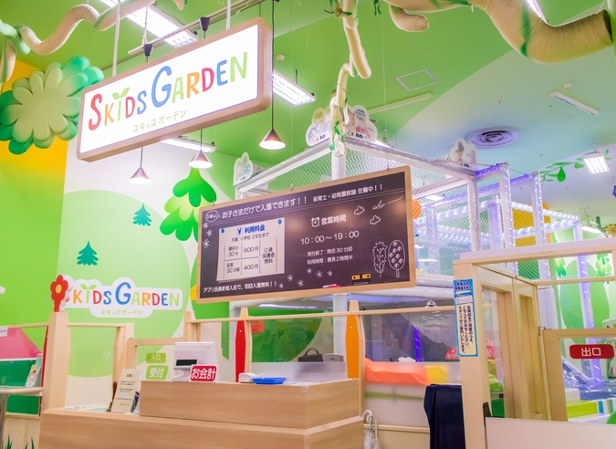
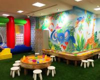
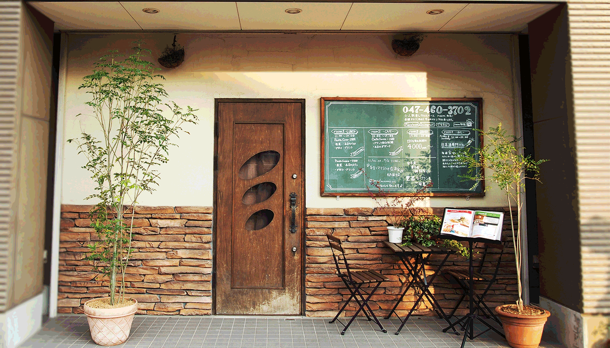

モーリーファンタジー

場所：イオンモール津田沼
JR総武線 津田沼駅から徒歩７分
営業時間：モーリーファンタジー 9:00～22:00
キッズガーデン 10:00～19:00
料金：最初の30分600円、延長30分毎400円
ショッピングセンター内の身近な遊び場で、親も子も一緒に安心して楽しめます。
３歳以上は子どもだけで入場できるので、親はその間にイオンの中でお買い物に行ってもOK！
http://www.fantasy.co.jp
デジキューBBQテラス津田沼パルコ店
場所：JR津田沼駅直結 アクセス抜群のパルコ屋上
営業時間：4月6日～11月30日
営業時間：11時～22時（3部制）
【1部】11時～14時
【2部】15時～18時
【3部】19時～22時
料金：大人1,500円、小学生750円、幼児無料（税別）
面倒な炭や機材の準備・片付け不要、食材・飲み物持ち込みOK！事前の買い物が不要になるので、会社から直行で、完全に手ぶらでバーベキューが可能です！
会場はテント完備なので、天候が優れない日も安心です!
https://www.bbqgo.jp/spot/id=3739
シェア畑
場所：新京成電鉄新京成線前原駅から徒歩10分
営業時間：9:00～18:00
料金：3㎡ 5,926円 、10㎡ 7,408円～
夏はトウモロコシをはじめ、キュウリやミニトマト、冬は大根やほうれん草、イチゴなど人気の栽培品目を作付けできます！初心者の方には特におすすめです。
https://www.sharebatake.com/
あそびパーク morisia AMUSE PARK

場所：モリシア津田沼店2F
営業時間：10時00分 ～ 21時00分
料金：お子様（生後６ヶ月～12歳） 10分 170円 （税込）、保護者 10分 170円 （税込）
夢中になれる遊びがたくさんある”あそびパーク”が併設されたアットホームなゲームセンターです。
ふわふわボールプールは、ボールの中にもぐったり、ボールを投げたりと大人気です！
https://bandainamco-am.co.jp/game_center/loc/tsudanuma-morisia/
room 船橋

場所：船橋市本町１丁目26‐14
営業時間：
料金：1800円4人から予約が可能です！
キッズスペースにオムツ替え台も完備。
テレビもございますので、小さなお子様を連れての食事会も慌てることなくゆったりと落ち着いて子連れランチをお楽しみ頂けます。
http://room-funabashi.com/